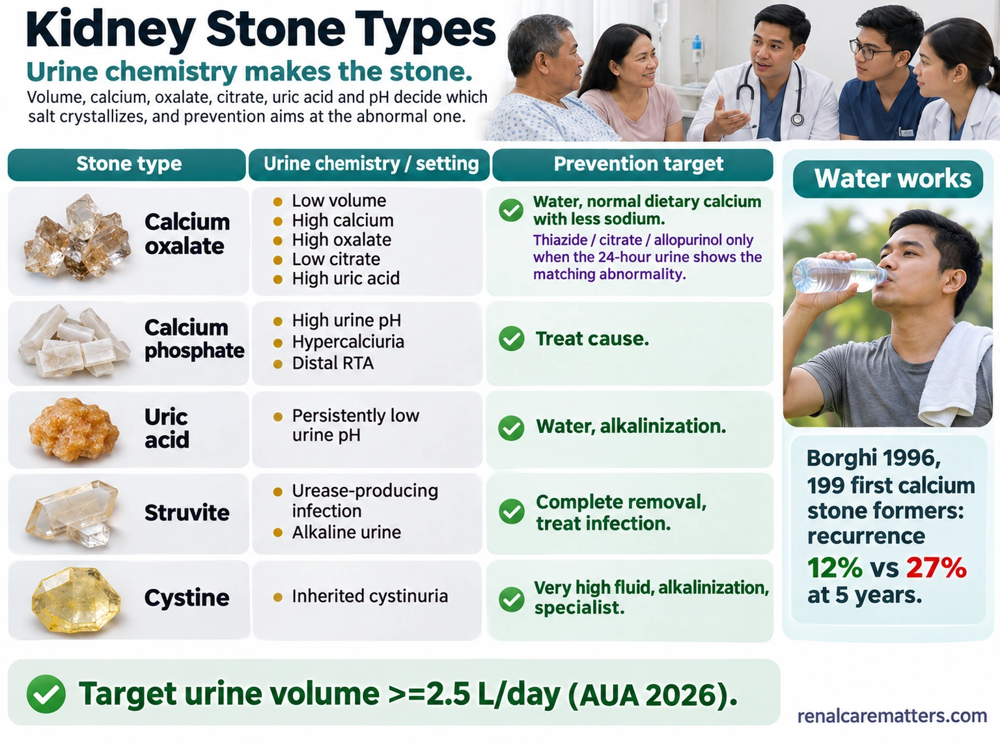
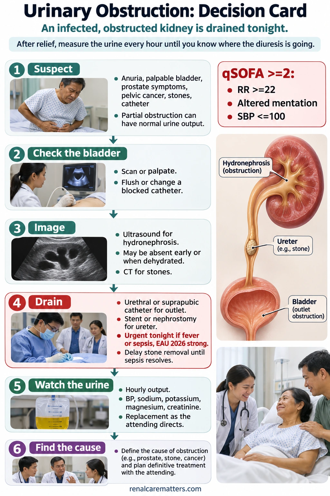

Treat pyelonephritis and urosepsis, decompress obstruction, and prevent the next stone.
PublishedNailathalaGipatikPepalwal:ReferencesMga SanggunianMga TinubdanReng Reperensya:11Audience: Adult and pediatric nephrology fellows · internal medicine and pediatric residents · medical interns on medicine, pediatrics, ICU and dialysis rotations, and residents who work shifts as dialysis physicians on dutyRead timeOras ng pagbasaOras sa pagbasaOras ning pamamasa:
Training track for nephrology fellows, residents and medical interns
Study material for medical interns, residents and fellows. It explains the reasoning behind common decisions; it is not a protocol and gives no drug doses. Doses, rates and order sets come from current guidelines, product labels, your institution’s approved protocols and your supervising physician. Benefit rules change: confirm them on the date of service. Every case is fictional.
Learning objectives
After this module you should be able to
Intern: Recognize urosepsis (fever, rigors, a fast breathing rate, low blood pressure or confusion with urinary symptoms) and urinary obstruction (anuria, a palpable bladder, colic with fever), and report them at once with cultures drawn before antibiotics.
Resident: Treat pyelonephritis and complicated urinary tract infection by the Infectious Diseases Society of America (IDSA) 2025 approach, and arrange urgent decompression of an infected, obstructed kidney the same night.
Fellow: Run a metabolic stone evaluation, interpret 24-hour urine chemistry and stone composition, and prescribe prevention with the evidence and grade behind each measure, including where trials and guidelines disagree.
Pre-testBefore you read, answer the 5 self-assessment questions and note your score. After the module, select New set of questions and compare. The difference is what you learned; the questions you still miss are what to reread.
Start here
The big picture, in plain words
Your role · when the plumbing becomes the emergencyThe intern sees the shivering patient with flank pain and the urine bag that has not filled since morning. Draw blood and urine cultures before the first antibiotic, scan or palpate the bladder, and call. The resident starts the right empiric antibiotic, recognizes the patient whose kidney is both infected and obstructed, and gets a urologist or interventional radiologist to drain it tonight. The fellow sees the patient again in clinic, finds out why the stone formed, and writes a prevention plan that rests on what the trials actually showed.
In plain wordsThink of the urinary tract as the drain of a house. A clogged drain backs up into the sink. A drain that is clogged and full of dirty water becomes a source of infection that spreads into the whole house. You can scrub the sink all you like; until someone clears the drain, the problem keeps coming back.
The picture has a limit. A blocked kitchen drain does not hurt the pipes above it, but a blocked ureter does. When urine cannot leave, pressure in the renal pelvis rises and is transmitted back to the tubules and Bowman’s space. Filtration falls because the pressure opposing it rises. Within hours the kidney constricts its own afferent arterioles, reducing blood flow further. If obstruction persists, tubules lose their ability to reabsorb sodium, concentrate urine and excrete acid and potassium, and the interstitium begins to scar. Infection behind an obstruction is worse still: bacteria in stagnant urine under pressure enter the bloodstream, antibiotics reach the obstructed pelvis poorly, and septic shock can follow within hours. That is why an infected, obstructed kidney is a drainage emergency, not a matter for antibiotics alone.
Figure 1 · Key numbers
Sepsis with obstructing stones (EAU 2026)Urgently decompress the collecting system with a nephrostomy or ureteral stent (strong recommendation)
Complicated Urinary tract infection (UTI) duration (IDSA 2025)5 to 7 days of a fluoroquinolone or 7 days of another agent in patients improving on effective therapy, rather than 10 to 14 days (conditional)
High water intake, first calcium stone (Borghi 1996)Recurrence at 5 years 12% versus 27% in 199 patients
Hydrochlorothiazide dose-response trial for prevention of kidney stone recurrence (NOSTONE), recurrent calcium stonesRecurrence about the same with hydrochlorothiazide at three doses as with placebo (59% placebo) over 2.9 years
Most urinary infections respond to an appropriate antibiotic, and most small stones pass. A few patients have an obstructed, infected kidney that will kill them unless it is drained tonight, and many stone formers will form another stone unless someone asks why. Your work is to find the obstruction in every septic urinary patient, drain it without delay, choose and stop antibiotics wisely in a country where resistance is common, and turn a single episode of colic into a prevention plan.
Opening case · fictional
Case: Colic and fever at the construction site
Saturday, 9 p.m., the emergency room of a provincial hospital in Batangas City. Ramil Castillo, 38, is a steelworker on a construction site, outdoors from 6 a.m. to 5 p.m. in the summer heat. He drinks “about two bottles of water and a soft drink” a day. For two days he has had left flank pain that comes in waves and spreads to the groin. Since this afternoon he has had chills and a fever of 39.2 °C.
His blood pressure is 96/60 mm Hg, heart rate 118 per minute, respiratory rate 24 per minute; he is alert. White cell count is 18,000/µL. Creatinine is 1.9 mg/dL; it was 1.0 mg/dL at his pre-employment physical last year. Urine shows many white cells, bacteria and a positive nitrite. A non-contrast computed tomography (CT) scan shows a 7-mm stone at the left ureterovesical junction with moderate hydronephrosis. The emergency physician has drawn blood cultures and started intravenous fluids and an antibiotic. The admitting note reads: “Trial of tamsulosin, admit to ward, urology to see tomorrow.”
Before reading on, decide:
Is this an emergency, and what must happen tonight?
How will you choose the antibiotic and decide how long to give it?
After he recovers, how will you find out why he formed the stone and prevent the next one?
Keep your answers in mind. The lesson gives you what you need, and the case review near the end shows one sound response.
Lesson · part 1
Pyelonephritis, complicated infection and urosepsis
Most urinary infections begin when gut bacteria, usually Escherichia coli, colonize the periurethral area and ascend. In the bladder they cause cystitis. If they climb the ureter, often helped by adhesins that bind the urothelium, they reach the renal pelvis and parenchyma and cause pyelonephritis: fever, flank pain and tenderness, and systemic illness. Anything that slows urine flow (a stone, a large prostate, a neurogenic bladder, a catheter, pregnancy) or lowers host defense (diabetes, immunosuppression) makes ascent easier and clearance harder.
The IDSA 2025 guideline reclassified urinary infection by where it is, not by who has it. Cystitis is infection confined to the bladder in an afebrile man or woman. A complicated urinary tract infection (cUTI) extends beyond the bladder, with systemic features such as fever, flank pain or tenderness, and includes pyelonephritis, febrile or bacteremic infection, catheter-associated infection and prostatitis. Infection in a man is no longer automatically complicated.1 The 2010 IDSA and European Society for Microbiology and Infectious Diseases (ESCMID) guideline for uncomplicated cystitis and pyelonephritis in women still guides that narrower group, and its emphasis on local resistance and the collateral damage of broad-spectrum antibiotics remains relevant.2
Step in IDSA 2025
What it asks
What it means for you
1. Severity
Does the patient have sepsis? (conditional, very low certainty)
Sepsis widens the initial choice to include carbapenems; without sepsis, avoid carbapenems and newer agents
2. Resistance risk
Prior resistant urine isolates; a fluoroquinolone in the past 12 months (conditional, very low certainty)
Avoid an antibiotic that the patient’s earlier isolate resisted, and fluoroquinolones after recent use
3. Patient factors
Allergies, contraindications, interactions (good practice statement)
Adjust for kidney function with the pharmacist
4. Antibiogram
For sepsis only, a local antibiogram from the past 12 months (conditional, very low certainty)
Choose an agent with at least 90% susceptibility in septic shock, or 80% in sepsis without shock
For a patient with sepsis, the guideline’s initial choices are a third- or fourth-generation cephalosporin, a carbapenem, piperacillin-tazobactam or a fluoroquinolone; for cUTI without sepsis, the same list without carbapenems.1 Doses come from your formulary and must be adjusted for kidney function; most labels state the adjustment by creatinine clearance (CrCl), estimated with the Cockcroft–Gault equation. Duration: in patients improving on effective therapy, IDSA 2025 suggests 5 to 7 days of a fluoroquinolone (conditional, moderate certainty) or 7 days of a non-fluoroquinolone (conditional, very low certainty) rather than 10 to 14 days, and 7 days rather than 14 for gram-negative bacteremia (conditional, low certainty), counted from the first day of effective therapy; men with suspected acute bacterial prostatitis may need longer. It suggests switching to an oral agent once the patient is improving and can take one (conditional, low certainty).1 The trials behind these recommendations excluded patients with severe sepsis, immunosuppression, abscesses, obstruction and severe kidney impairment, so those patients need an individual plan.1
Recognizing sepsis. Sepsis-3 defines sepsis as life-threatening organ dysfunction from a dysregulated response to infection, operationalized as a rise of 2 or more points in the Sequential Organ Failure Assessment (SOFA) score, associated with in-hospital mortality above 10%. Outside the intensive care unit, a quick SOFA (qSOFA) of 2 or more (respiratory rate of 22/min or more, altered mentation, systolic pressure of 100 mm Hg or less) identifies patients more likely to do badly.3 qSOFA is a prognostic flag, not a diagnostic test; a patient with one point can still be septic.
Philippine practice. Extended-spectrum beta-lactamase (ESBL)-producing E. coli and Klebsiella are common in Philippine hospital isolates, and resistance varies between hospitals. Know your hospital’s antibiogram and the Department of Health (DOH) Antimicrobial Resistance Surveillance Program report, send cultures before the first dose, and narrow therapy when results return. Patients often bring old culture results on their phones; read them, because IDSA 2025 asks you to avoid drugs a prior isolate resisted.
RememberIn every febrile urinary infection, draw cultures first, ask whether the patient is septic and whether the kidney is obstructed, and choose the antibiotic by severity, the patient’s own past cultures and your hospital’s antibiogram.
Lesson · part 2
Kidney stones: the colic, the passage, the decision to intervene
A stone forms when urine is supersaturated with a salt, most often calcium oxalate, and crystals nucleate, grow and anchor to the papilla. It causes pain when it moves into the ureter and obstructs it: the pelvis distends, the ureter spasms, and prostaglandins raise renal blood flow and pelvic pressure further. That is why the pain comes in waves, radiates from loin to groin as the stone descends, and is relieved by nonsteroidal anti-inflammatory drugs (NSAIDs), which reduce prostaglandin-mediated pressure. The stone usually lodges at the narrow points: the ureteropelvic junction, the pelvic brim and the ureterovesical junction.
Finding
What it means
What you do
Colic, no fever, stone under about 5 mm, normal kidney function
Likely to pass spontaneously
Analgesia, fluids, strain the urine, follow up imaging
Distal ureteral stone 5 to 10 mm, no infection
Passage less certain
Consider medical expulsive therapy; urology review
Fever, pyuria or sepsis with an obstructing stone
Infected, obstructed kidney
Urgent decompression tonight; antibiotics; delay stone removal
Rising creatinine, solitary kidney or bilateral stones, anuria
Obstructive acute kidney injury (AKI)
Urgent urology; drain
Pain uncontrolled despite adequate analgesia
Failure of conservative care
Urology for intervention
What the EAU 2026 guideline says. Offer an nonsteroidal anti-inflammatory drug (NSAID) as the first drug of choice for renal colic, depending on cardiovascular risk factors and expected side effects (strong). Offer alpha-blockers as medical expulsive therapy as one option for distal ureteral stones of 5 to 10 mm (strong), noting that this use is off-label. In sepsis with obstructing stones, urgently decompress the collecting system with a percutaneous nephrostomy or an indwelling ureteral stent, and delay definitive treatment of the stone until sepsis has resolved (both strong).4 In a patient with chronic kidney disease (CKD), AKI or volume depletion, the attending may prefer other analgesics, because NSAIDs reduce glomerular blood flow when the kidney depends on prostaglandins.
Where trials disagree. Medical expulsive therapy is a useful lesson in reading evidence. Spontaneous Urinary Stone Passage Enabled by Drugs (trial) (SUSPEND), a pragmatic multicenter trial in 24 UK hospitals, randomized 1,167 adults with a single ureteric stone on CT to tamsulosin, nifedipine or placebo. The proportion not needing further intervention at 4 weeks was 81% with tamsulosin and 80% with placebo, with no difference.5 A meta-analysis of 55 randomized trials by Hollingsworth and colleagues found that alpha-blockers increased stone passage overall (risk ratio 1.49, moderate-quality evidence), with no clear benefit for smaller stones and a 57% higher chance of passage for larger stones.6 The two are reconciled by stone size: SUSPEND included many small stones that pass anyway. That is why the EAU recommendation is limited to distal stones of 5 to 10 mm.
Philippine practice. Outdoor workers in hot weather, such as construction workers, farmers, fishermen and traffic enforcers, lose large volumes of sweat and produce concentrated urine; many drink soft drinks or sweetened juice instead of water. Access to CT, ureteroscopy and percutaneous nephrostomy is concentrated in larger hospitals; if your hospital cannot drain an infected, obstructed kidney tonight, the transfer must start now, with antibiotics and resuscitation already running.
RememberA stone with fever is not a stone problem; it is an undrained abscess. Drain it tonight and treat the stone later.
Lesson · part 3
Why did the stone form? Metabolic evaluation and prevention
A stone is the end product of urine chemistry. Supersaturation rises when urine volume is low, when calcium, oxalate, uric acid or phosphate excretion is high, and when inhibitors such as citrate are low. Urine pH decides which salt crystallizes: uric acid stones form in persistently acid urine (common with diabetes, obesity and gout), calcium phosphate stones in alkaline urine (as in distal renal tubular acidosis, Module 19), and struvite stones in alkaline, infected urine with urease-producing bacteria such as Proteus. Prevention aims at the variable that is abnormal.
Stone type
Main urine risk
Prevention target
Calcium oxalate
Low volume, hypercalciuria, hyperoxaluria, hypocitraturia, high uric acid
Water, normal dietary calcium with less sodium, less oxalate excess; thiazide, citrate or allopurinol when indicated
Calcium phosphate
High urine pH, hypercalciuria; distal Renal tubular acidosis (RTA)
Treat the cause; water; thiazide for hypercalciuria
Uric acid
Persistently low urine pH, high uric acid
Water; urinary alkalinization
Struvite
Infection with urease-producing bacteria
Complete stone removal; treat infection
Cystine
Inherited cystinuria
Very high fluid intake, alkalinization, specialist care
Who needs a full evaluation. Every stone former needs a basic screen: stone analysis whenever a stone is retrieved, serum chemistry including calcium and uric acid, and a urinalysis. The 2014 American Urological Association (AUA) guideline recommended additional metabolic testing, with one or two 24-hour urine collections, in high-risk or interested first-time stone formers and in recurrent stone formers (standard; evidence strength grade B).7 The AUA replaced that guideline in July 2026 with a new guideline of 39 statements for adults and children.8 High-risk features include recurrence, a solitary kidney, CKD, bilateral or large stones, a young age at first stone, and non-calcium-oxalate composition.
Water. Borghi and colleagues randomized 199 patients after their first idiopathic calcium stone to a high water intake or no specific advice and followed them for 5 years. Recurrence occurred in 12% (12 of 99) with high water intake versus 27% (27 of 100) without; the time to recurrence was longer.9 That is an absolute reduction of about 15 percentage points, roughly one recurrence prevented for every 7 patients over 5 years. The AUA 2026 guideline advises encouraging water intake to produce a urine volume of at least 2.5 liters daily in adults with a history of calcium-based stones (moderate recommendation; evidence level grade C), and limiting soft drinks.8 The 2014 guideline graded the same 2.5-liter urine target as a standard with grade B evidence.7 The grades differ because the guideline methods changed, not the trial.
Thiazides, after NOSTONE. For decades thiazides were given to recurrent calcium stone formers on the basis of small, older trials. NOSTONE, a double-blind trial in Switzerland, randomized 416 patients with recurrent calcium-containing stones to hydrochlorothiazide at one of three doses or placebo and followed them for a median of 2.9 years. A symptomatic or radiologic recurrence occurred in 59% with placebo and in 59%, 56% and 49% across the three hydrochlorothiazide doses, with no dose-response relation. Hypokalemia, gout, new-onset diabetes, skin allergy and creatinine rises were more common with the drug.10 Patients were not selected for hypercalciuria. The AUA 2026 guideline still says a thiazide or thiazide-like diuretic should be offered to adults with recurrent calcium stones and relatively high or high urinary calcium, and that alkali therapy and allopurinol may be offered in defined groups.8 The disagreement is real and is about selection: NOSTONE tested thiazides in unselected recurrent formers, while the guideline targets patients with a measured hypercalciuria. Decide with the 24-hour urine in hand, and weigh the metabolic side effects.
What you do at your stage. The intern asks for the stone itself, strains the urine, and records fluid intake and occupation. The resident orders the basic screen and sends the stone for analysis. The fellow orders and interprets 24-hour urine chemistry, matches prevention to the abnormality, and repeats the collection after changes to check that the urine actually changed. In the Philippines, stone analysis and 24-hour urine chemistry panels cost money and are not available everywhere; prioritize them for recurrent and high-risk patients, and never skip the stone analysis when a stone is in hand.
RememberEvery stone former gets water advice and a stone analysis; recurrent and high-risk formers get a 24-hour urine, and drugs follow the abnormality the urine shows.
Lesson · part 4
Urinary obstruction: find it, drain it, then watch the urine
Obstruction can sit anywhere from the renal pelvis to the urethra. Only obstruction of both kidneys, or of a single functioning kidney, or of the bladder outlet, causes AKI on its own, because one healthy kidney can compensate for the other. In older men, bladder outlet obstruction from an enlarged prostate is the most common cause of obstructive AKI; in women, pelvic tumors, especially cervical cancer, can encase both ureters; in anyone, stones, clots, strictures and a blocked catheter do the same.
Figure 2 · Obstruction at the bedside
SuspectAnuria or a sudden fall in urine output, a palpable or tender bladder, a history of prostate symptoms, pelvic cancer, stones or a urinary catheter. Remember that partial obstruction can produce normal or even high urine volumes.
Check the bladderBladder scan or palpation. A full bladder in an anuric patient is a catheter, not a diuretic. Flush or change a blocked catheter.
ImageKidney ultrasound for hydronephrosis. Hydronephrosis can be absent very early, in severe volume depletion, or when the collecting system is encased by tumor. CT shows stones and the level of obstruction.
DrainUrethral or suprapubic catheter for outlet obstruction; ureteral stent or percutaneous nephrostomy for ureteric obstruction, urgently if infected.
Watch the urineMeasure output hourly after relief. Replace losses as the attending directs. Check sodium, potassium, magnesium and creatinine often.
Find the causeStone, prostate, tumor, stricture. Plan definitive treatment once the patient is stable.
When obstruction is relieved, a post-obstructive diuresis may follow. Retained urea, sodium and water are excreted, and the injured tubules cannot concentrate urine or reabsorb sodium for a while. Most diuresis is appropriate and stops once the excess is gone. A few patients, especially those with long-standing obstruction, keep losing water and salt beyond what they retained and become volume depleted, hypokalemic, hypo- or hypernatremic. Matching replacement to output without thought keeps the diuresis going; ignoring it causes hypotension. The attending sets the plan; the intern and resident measure.
After relief
Physiology
What you monitor
First hours
Retained solute and water leave; urea acts as an osmotic diuretic
Hourly urine output, blood pressure, mental state
First days
Tubules recovering; sodium and concentrating defects
Back to the infected kidney. The EAU guideline’s two strong recommendations for sepsis with an obstructing stone are to decompress urgently and to delay definitive stone treatment until the infection resolves; it lists percutaneous nephrostomy and ureteral stent as the two options.4 Which one is chosen depends on local skill, availability, the patient’s anatomy and clotting, and the hour. Send urine from above the obstruction for culture when the drain is placed. Antibiotics continue, adjusted to cultures.
In childrenA febrile urinary infection in an infant or young child is often the first sign of reflux or a structural anomaly, and the evaluation includes a kidney and bladder ultrasound. The American Academy of Pediatrics guideline for febrile infants and children aged 2 to 24 months sets the approach to diagnosis and imaging.11 Stones in children suggest a metabolic or anatomic cause until proven otherwise and always deserve a full evaluation. See Attending Pediatric Nephrologist, Module 7.
Stop and callStop and call the attending nephrologist and the urologist now, per unit protocol, but always ask the attending nephrologist for guidance, when you see:
Fever or sepsis with a stone or hydronephrosis on imaging
Anuria, or a rising creatinine with a solitary kidney or bilateral obstruction
Hypotension or a qSOFA of 2 or more in a patient with a urinary source
Urine output above what the plan expected after relief of obstruction, with falling blood pressure or abnormal sodium or potassium
No facility to drain an infected, obstructed kidney tonight: start the transfer now

Figure 3. Urine chemistry makes the stone. Volume, calcium, oxalate, citrate, uric acid and pH decide which salt crystallizes, and prevention aims at the abnormal one.

Figure 4. An infected, obstructed kidney is drained tonight. After relief, measure the urine every hour until you know where the diuresis is going.
RememberIn every patient with AKI, rule out obstruction with a bladder check and an ultrasound; after relief, measure the urine every hour until you know where the diuresis is going.
On the floor
Real situations: problems and solutions
These are fictional but typical. For each one, cover the answer, decide what you would do, then compare. Where a step depends on local rules, your unit’s procedure and your supervisor’s direction come first.
The grandmother who became confused
What you see
An 82-year-old woman in a Marikina nursing home is brought in drowsy, with a temperature of 38.6 °C, a respiratory rate of 24 and a blood pressure of 94/58 mm Hg; her urine is cloudy.
What is likely going on
Urosepsis with qSOFA of 3; possible obstruction or retention.
What to do
Draw blood and urine cultures, start the sepsis bundle and an empiric antibiotic per protocol, scan the bladder, order an ultrasound, and call the resident and attending.
Why it matters
Older adults often present with confusion rather than urinary symptoms; obstruction must be excluded in every septic urinary patient.
The fisherman with colic and no fever
What you see
A 44-year-old fisherman from Bantayan Island has left colic; CT shows a 4-mm distal ureteral stone, no hydronephrosis beyond mild, and his creatinine is normal.
What is likely going on
A small stone likely to pass spontaneously.
What to do
Analgesia per protocol, fluids, a strainer and clear return instructions for fever, vomiting or uncontrolled pain; follow-up imaging if it does not pass.
Why it matters
Small stones usually pass; the warning signs, not the stone, decide when to return.
The man with a creatinine of 4.8 and a big prostate
What you see
A 74-year-old retired teacher from Malolos has a creatinine of 4.8 mg/dL, a distended bladder and bilateral hydronephrosis; a catheter drains 2,100 mL.
What is likely going on
Obstructive AKI from bladder outlet obstruction, with a risk of post-obstructive diuresis.
What to do
Hourly urine output, blood pressure and frequent electrolytes; replacement as the attending directs; urology referral for the prostate.
Why it matters
Relief is half the treatment; the next 24 hours of monitoring is the other half.
The call-center agent with recurrent cystitis
What you see
A 29-year-old woman in Cebu has had four episodes of cystitis this year, each treated with a different antibiotic bought without a prescription.
What is likely going on
Recurrent cystitis with rising risk of resistant bacteria from repeated, unguided antibiotic use.
What to do
Send a urine culture before treating the next episode, review her prior results, discuss prevention, and refer if hematuria persists between infections.
Why it matters
Prior resistant isolates should steer the next antibiotic, and recurrent infection deserves a culture.
Field notes
Write the time cultures were drawn and the time the first antibiotic was given on the same line of the chart.
Bladder-scan every anuric patient before you think about diuretics.
Keep your hospital’s latest antibiogram as a photo on your phone and check its date.
Ask every stone patient to strain the urine and bring the stone; the analysis guides prevention.
For outdoor workers, plan water intake around the work shift, not around meals.
Case review
Back to the case: Colic and fever at the construction site
An emergency, tonight. Yes. Ramil has a fever, a heart rate of 118, a respiratory rate of 24 and a systolic pressure of 96 mm Hg (qSOFA 2) with an obstructing 7-mm stone and hydronephrosis: an infected, obstructed kidney with sepsis and AKI. Tamsulosin and a ward bed until tomorrow is the wrong plan. Continue resuscitation and antibiotics, call the urologist and the attending now, and arrange urgent decompression tonight with a percutaneous nephrostomy or ureteral stent, whichever can be done soonest and safely; EAU 2026 recommends both decompression and delaying stone removal until the sepsis resolves (strong). If the hospital cannot drain him tonight, start the transfer now.
The antibiotic. He has sepsis, so by IDSA 2025 the initial choice is among a third- or fourth-generation cephalosporin, a carbapenem, piperacillin-tazobactam or a fluoroquinolone, guided by his past cultures, any fluoroquinolone use in the past year, and an antibiogram that shows at least 80% susceptibility in sepsis (90% in septic shock). Given how common ESBL-producing bacteria are in Philippine hospitals, the attending may choose broader cover until cultures return. Adjust doses for his creatinine with the pharmacist. Send urine from the kidney at drainage. Narrow when results come back, switch to an oral agent once he improves, and plan a short course from the first day of effective therapy, with the duration individualized because obstruction and sepsis excluded such patients from the duration trials.
Prevention. Ask the urologist to send the stone for analysis. Check calcium, uric acid and creatinine once recovered. As a first stone without high-risk features, he needs at least the basic evaluation; a 24-hour urine is reasonable if he is interested or if he forms another. The clearest single intervention is water: a target urine volume of at least 2.5 liters a day (AUA 2026), which for a man sweating on a construction site means much more than two bottles. Work out with him how to carry and drink water at work and replace soft drinks. Borghi’s trial showed recurrence falling from 27% to 12% over 5 years with high water intake. Drugs come only if his urine shows an abnormality that a drug corrects.
Interactive case · fictional
Interactive case: No urine since morning
Work through a shift one decision at a time. The panel at the top changes with what you choose. After each choice you see why it is, or is not, the best move; after a weaker one you can try again or carry on and see where it leads. Your first choice at each step is scored. The score stays on this device and nothing is sent anywhere. In real practice, your unit’s protocol and the people responsible for each decision come first.
Skills lab · with your preceptor
Skills checklist: Urinary infection, stones and obstruction
Complete with a preceptor in the emergency room, on the ward or in clinic. Sign-off is local. Your preceptor rates each step as satisfactory, needs practice, or not observed. Steps marked Critical must all be satisfactory before sign-off. This checklist supports supervised learning; your unit’s own procedure and competency form are the authority. A printable version of every checklist is on the trainer page.
Draws blood and urine cultures before the first antibiotic dose and documents the time
Calculates qSOFA and recognizes sepsis in a patient with a urinary source
Identifies an infected, obstructed kidney on history, examination and imaging, and escalates for same-night decompression
Chooses an empiric antibiotic by the IDSA 2025 steps (severity, prior cultures, patient factors, antibiogram) and plans the duration
Monitors a patient after relief of obstruction with hourly urine output and serial electrolytes
Orders and interprets a basic and a 24-hour urine stone evaluation and writes a prevention plan with the evidence behind each measure
Placement activity. Emergency room, medical or urology ward, stone clinic
Self-assessment
Check your understanding
Each visit draws 5 questions at random from this module’s 5-question bank. Choose the single best answer for each, then select Check answers; an explanation appears under the best answer. Select New set of questions for a different mix. A good target is 4 of 5 on two different sets. Nothing you select is sent anywhere; scoring happens in your browser.
Gupta, K., Hooton, T. M., Naber, K. G., Wullt, B., Colgan, R., Miller, L. G., Moran, G. J., Nicolle, L. E., Raz, R., Schaeffer, A. J., Soper, D. E., Infectious Diseases Society of America, & European Society for Microbiology and Infectious Diseases. (2011). International clinical practice guidelines for the treatment of acute uncomplicated cystitis and pyelonephritis in women: A 2010 update by the Infectious Diseases Society of America and the European Society for Microbiology and Infectious Diseases. Clinical Infectious Diseases, 52(5), e103–e120. https://doi.org/10.1093/cid/ciq257
Singer, M., Deutschman, C. S., Seymour, C. W., Shankar-Hari, M., Annane, D., Bauer, M., Bellomo, R., Bernard, G. R., Chiche, J.-D., Coopersmith, C. M., Hotchkiss, R. S., Levy, M. M., Marshall, J. C., Martin, G. S., Opal, S. M., Rubenfeld, G. D., van der Poll, T., Vincent, J.-L., & Angus, D. C. (2016). The third international consensus definitions for sepsis and septic shock (Sepsis-3). JAMA, 315(8), 801–810. https://doi.org/10.1001/jama.2016.0287
European Association of Urology Urolithiasis Guidelines Panel. (2026). EAU guidelines on urolithiasis. European Association of Urology. https://uroweb.org/guidelines/urolithiasis
Pickard, R., Starr, K., MacLennan, G., Lam, T., Thomas, R., Burr, J., McPherson, G., McDonald, A., Anson, K., N’Dow, J., Burgess, N., Clark, T., Kilonzo, M., Gillies, K., Shearer, K., Boachie, C., Cameron, S., Norrie, J., & McClinton, S. (2015). Medical expulsive therapy in adults with ureteric colic: A multicentre, randomised, placebo-controlled trial. Lancet, 386(9991), 341–349. https://doi.org/10.1016/S0140-6736(15)60933-3
Hollingsworth, J. M., Canales, B. K., Rogers, M. A. M., Sukumar, S., Yan, P., Kuntz, G. M., & Dahm, P. (2016). Alpha blockers for treatment of ureteric stones: Systematic review and meta-analysis. BMJ, 355, i6112. https://doi.org/10.1136/bmj.i6112
Pearle, M. S., Goldfarb, D. S., Assimos, D. G., Curhan, G., Denu-Ciocca, C. J., Matlaga, B. R., Monga, M., Penniston, K. L., Preminger, G. M., Turk, T. M. T., White, J. R., & American Urological Association. (2014). Medical management of kidney stones: AUA guideline. The Journal of Urology, 192(2), 316–324. https://doi.org/10.1016/j.juro.2014.05.006
Borghi, L., Meschi, T., Amato, F., Briganti, A., Novarini, A., & Giannini, A. (1996). Urinary volume, water and recurrences in idiopathic calcium nephrolithiasis: A 5-year randomized prospective study. The Journal of Urology, 155(3), 839–843. https://pubmed.ncbi.nlm.nih.gov/8583588/
Dhayat, N. A., Bonny, O., Roth, B., Christe, A., Ritter, A., Mohebbi, N., Faller, N., Pellegrini, L., Bedino, G., Venzin, R. M., Grosse, P., Hüsler, C., Koneth, I., Bucher, C., Del Giorno, R., Gabutti, L., Mayr, M., Odermatt, U., Buchkremer, F., . . . Fuster, D. G. (2023). Hydrochlorothiazide and prevention of kidney-stone recurrence. The New England Journal of Medicine, 388(9), 781–791. https://doi.org/10.1056/NEJMoa2209275
Subcommittee on Urinary Tract Infection, Steering Committee on Quality Improvement and Management, & Roberts, K. B. (2011). Urinary tract infection: Clinical practice guideline for the diagnosis and management of the initial UTI in febrile infants and children 2 to 24 months. Pediatrics, 128(3), 595–610. https://doi.org/10.1542/peds.2011-1330
Educational self-study for physicians in training. Clinical tasks need your institution’s authorization and supervision. Completing this track is an Academy learning record only. It does not confer licensure, specialist status, PSN or PNSP membership or board eligibility, procedural privileges, CPD units, or completion of an institutional training program, and it does not replace current guidelines, regulations, your institution’s protocols and formulary, or your supervisor.